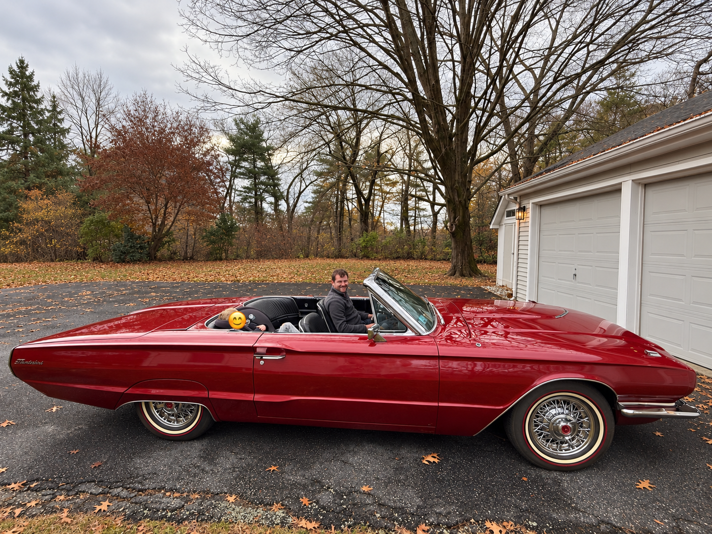

Easy · Part connections
Bolt 380571-S is used to attach part 3468 to what part?
See the correct answer →Can AI read an automotive parts diagram?
I bought a 1966 Ford Thunderbird about a year ago, and I do most of the work on it myself. While working on the car, I often gave AI tools the manuals and parts catalogs and asked questions. They frequently had trouble understanding the diagrams.
I built this benchmark to find out what they could and couldn’t do, and to track whether they get better over time.
questions
exercises
highest score so far
completed models
This is the front suspension diagram for the 1966–67 Falcon and Fairlane, with variations for the 1967 Mustang. One exercise contains several questions about the same page. Here are three from this exercise, exactly as written in the benchmark.

Easy · Part connections
Bolt 380571-S is used to attach part 3468 to what part?
See the correct answer →Medium · Catalog notation
According to the diagram, what change(s) were made to the attachment hardware for part 18A017?
See the correct answer →Hard · Assembly order
Part 5495 passes through a series of other parts. List all the part numbers for these parts, in order from top to bottom as installed on the vehicle. Do not include 5495 itself.
See the correct answer →Each model gets the image and one question at a time, along with instructions for reading the catalog and formatting its answer. It doesn’t see the other questions or their answers.
GPT-6 Astra does extremely well on this benchmark, scoring 87.4%—well ahead of the other completed models. Claude Fable 5.1 is next at 61.3%.
| 95% CI |
|---|
Click a model for its breakdown.
Groups with fewer than five questions aren’t shown. There are too few questions in some categories to draw strong conclusions.
So far, all the exercises come from one Ford parts catalog. I wrote the questions and answers myself. There’s plenty more to test; these results only tell us how models did on this set.
A question, the relevant page images, and instructions on how to use the catalog. Images are rendered at 300 DPI, with any crops or highlights specified for that question. The PDF’s OCR text isn’t sent. None of the current questions requires looking something up in the text catalog.
Every question has the same weight, regardless of difficulty. Part numbers, lists, and other structured answers are checked against the answer key. Free-text answers are graded against a rubric and can earn partial credit. Partial credit for incomplete lists is reported separately from the main score.
These models were accessed through OpenRouter.
Loading run settings…
Each score uses one answer per question. Some answers are reused from earlier runs when the question, image, and settings match. The assembly date is when those results were combined, not necessarily when every answer was generated.
Several questions share each diagram, so the confidence intervals resample whole exercises rather than treating every question as independent. With only ten exercises, the intervals are still wide. They don’t capture how answers might change on a second run, or errors made by the grader.
A model gets zero if it runs out of output tokens or returns no final answer. Service errors can be retried. Models with unfinished runs or unresolved grading errors aren’t listed yet. A service failure doesn’t tell us how the model would have answered.
Cost is what the provider reported for the saved answers, including reused ones. Grading costs are listed separately. Paid retries that weren’t recorded may be missing, so these figures won’t necessarily match the bill. Response times also depend on provider load and how much reasoning the model does.
This benchmark uses diagrams from the Ford 1960–68 Car Master Parts and Accessories Catalog, a 5,445-page reference Ford dealerships used to look up parts before computerized parts systems.
To run the benchmark yourself, you’ll need your own PDF copy of the catalog. You can purchase it from Forel (product D10063).
Adam Johnson. Part Catalog Bench. 2026.
If you use the benchmark or its results, please cite it and include the benchmark version or commit and the results snapshot you used.
@misc{johnson2026partcatalogbench,
author = {Johnson, Adam},
title = {{Part Catalog Bench}},
year = {2026},
howpublished = {AI benchmark},
url = {https://github.com/adamj9431/part-catalog-bench},
note = {Pilot benchmark}
}Questions, feedback, or a mistake in the benchmark? Email me at adamj9431@gmail.com.
